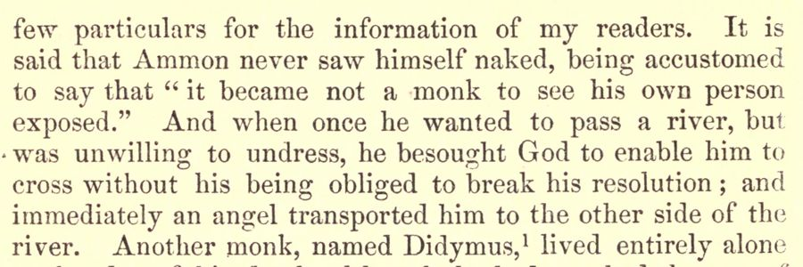
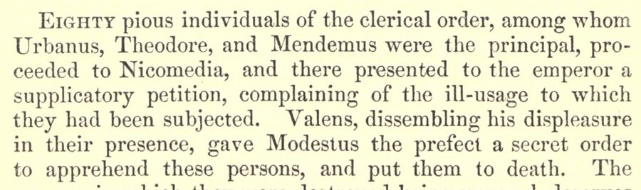

Ammon, who never saw himself naked (IV.23, p. 236)
English: Bohn translation, book IV, chapter 23, pp. 235–236, scan n259. Highlighted: what Lecky’s sentence rests on.

[p. 235] … Ammon. In his youth he had an aversion to matrimony; but when some of his relatives urged him not to contemn this ordinance, he was prevailed upon to marry. On leading the bride with the customary ceremonies from the banquet-room to the nuptial couch, after their mutual friends had withdrawn, he read to his wife Paul’s Epistle to the Corinthians, and explained to her the apostle’s admonitions to married persons. … By these and other arguments of a similar kind, he persuaded his virgin bride to renounce with him a secular life, prior to their having any conjugal knowledge of each other. Having taken this resolution, they retired together to the mountain of Nitria, and in a hut there inhabited for a short time one common ascetic apartment, without regarding their difference of sex, being, according to the apostle, “one in Christ.” But not long after, the recent and unpolluted bride thus addressed Ammon: “It is unsuitable,” said she, “for you who practise chastity, to look upon a woman in so confined a dwelling; let us therefore, if it is agreeable to you, perform our exercise apart.” …
[p. 236] … It is said that Ammon never saw himself naked, being accustomed to say that “it became not a monk to see his own person exposed.” And when once he wanted to pass a river, but was unwilling to undress, he besought God to enable him to cross without his being obliged to break his resolution; and immediately an angel transported him to the other side of the river. Another monk, named Didymus, lived entirely alone to the day of his death …
Lecky (ch. II, text at note 2): “Thus, another saint, who was of opinion that a monk should never see himself naked, and who had therefore scrupulously abstained from washing since his conversion, stood one day in despair upon the banks of a bridgeless stream, when an angel descended to assist him, and transported him in safety across the dreaded element.” Socrates says nothing of washing, despair or a bridgeless stream. The same page goes on with other desert sayings: Pior ate as he walked, “that I may not seem to make eating a serious business”; Isidore claimed that he had not been conscious of sin even in thought for forty years.
Eighty clergy burnt in a ship by order of Valens (IV.16, pp. 229–230)
English: Bohn translation, book IV, chapter 16, pp. 229–230, scans n252–n253.

Eighty pious individuals of the clerical order, among whom Urbanus, Theodore, and Mendemus were the principal, proceeded to Nicomedia, and there presented to the emperor a supplicatory petition, complaining of the ill-usage to which they had been subjected. Valens, dissembling his displeasure in their presence, gave Modestus the prefect a secret order to apprehend these persons, and put them to death. … The prefect, fearing that he should excite the populace to a seditious movement against himself, if he attempted the public execution of so many, pretended to send them away into exile. Accordingly these men … were embarked as if to be conveyed to their several places of banishment: but the sailors were commanded to set the vessel on fire, as soon as they reached the mid sea, that their victims, being so destroyed, might even be deprived of burial. …
Lecky (vol. II, ch. IV, text at note 12): “On one occasion in the reign of the Arian emperor Valens, no less than eighty Catholic ecclesiastics were imprisoned in a ship at sea and treacherously burnt.” That is a fair summary. The third name is printed “Mendemus” in this translation; the usual form is Menedemus.
Further down the rabbit hole
Sources that Lecky cites in the notes next to the ones that cite this page.
- Milman, The History of ChristianityDid Constantine ban the pagan sacrifices? A dean weighs Eusebius against Constantine
- Palmer, A Treatise on the Church of Christ“Whosoever is separated from the Catholic Church … will not have life”
- Bédarride, Les Juifs en France, en Italie et en EspagneWhen Christianity came to power, the Jews’ persecution began, and a Pope wrote that God does not rejoice in bloodshed
- Codex Theodosianus XVI.8.1 and XVI.10.3Constantine on Jews and converts, and the temples spared for the sake of the games
- Jerome, Life of Paul the First HermitA raven’s loaf, doubled for a guest, and two lions at the graveside
- Lactantius, Divine Institutes, Book V“Religion cannot be compelled”: a Christian case for tolerance, written as the persecutions ended


Backlinks
Every place in Rationalism in Europe that links to this page (generated automatically when the site is built).